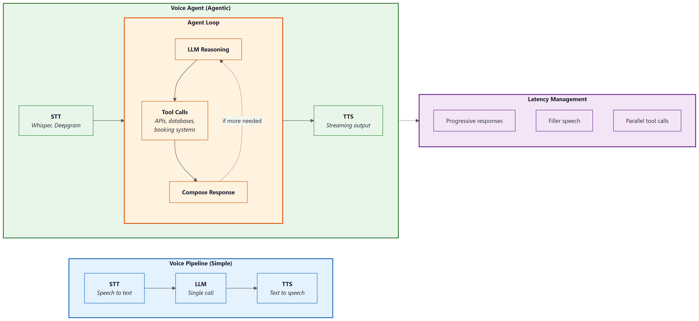

"I can hear you perfectly. It is the understanding part that keeps me humble."
Echo, Latency-Conscious AI Agent
Voice agents combine the naturalness of speech with the power of agentic tool use. Where a voice pipeline converts speech to text, calls an LLM, and speaks the response, a voice agent can also book appointments, look up orders, modify records, and take actions in external systems, all through natural spoken conversation. The central engineering challenge is latency: users expect sub-500ms response times, but the agent may need to call tools, wait for results, and compose a thoughtful answer. This section covers production voice agent platforms (OpenAI Realtime API, LiveKit Agents, Pipecat), latency management techniques, and the emerging speech-to-speech paradigm that eliminates the STT/TTS pipeline entirely.
Prerequisites
This section extends the voice and multimodal foundations from Section 21.5, which covers the individual STT, TTS, and pipeline components. Familiarity with tool use and Section 22.1 from Part VI will help you understand how voice agents combine speech processing with agentic capabilities.
21.6.1 From Voice Pipelines to Voice Agents
Section 21.5 introduced the core components of voice interfaces: speech-to-text, text-to-speech, and the pipeline that connects them through an LLM. A voice agent goes further by adding agentic capabilities to this pipeline. A voice agent can use tools, access databases, call APIs, and take actions in external systems, all while maintaining a natural spoken conversation. This transforms voice from a simple I/O modality into a complete interaction paradigm where users accomplish complex tasks through speech alone.

The key architectural difference between a voice pipeline and a voice agent is the presence of an Section 22.1. In a simple voice pipeline, audio goes in and audio comes out, with a single LLM call in between. In a voice agent, the LLM may decide to invoke tools before responding, and those tool calls may take variable amounts of time. This creates a fundamental tension: the user is waiting in real time for a spoken response, but the agent needs time to think, call APIs, and compose its answer. Managing this tension through progressive responses, filler speech, and parallel execution is the central engineering challenge of voice agents.
Several platforms have emerged to simplify voice agent development. OpenAI Realtime API provides speech-to-speech capabilities with built-in function calling, eliminating the need for separate STT and TTS services. LiveKit Agents offers an open-source framework for building voice agents with pluggable STT, LLM, and TTS providers. Pipecat provides a pipeline-based framework for composing voice AI applications from modular components. Vapi and Bland.ai offer managed platforms for telephony-based voice agents.
The critical metric for voice agents is time-to-first-byte of audio response (TTFB), not total response time. Users tolerate a longer total response if they hear the agent begin speaking within 500ms of finishing their own utterance. This means the architecture must prioritize streaming: start generating speech as soon as the first tokens of the LLM response are available, while the rest of the response is still being generated. The streaming patterns in Section 10.2 are not optional for voice agents; they are the foundation of acceptable latency.
Early telephone IVR systems gave callers about 8 seconds of patience before they started mashing the "0" key for a human operator. Voice AI agents get roughly the same grace period, except now the caller expects the agent to understand "I want to talk to a real person" spoken in frustration at double speed.
21.6.2 OpenAI Realtime API: Speech-to-Speech Agents
The OpenAI Realtime API represents a paradigm shift in voice agent architecture. Instead of the traditional three-stage pipeline (STT, LLM, TTS), the Realtime API accepts audio input directly and produces audio output directly, using a single multimodal model. This eliminates two network round trips and two transcription/synthesis steps, dramatically reducing latency. The model also has access to acoustic information (tone, emphasis, pacing) that is lost in text-only pipelines.
The Realtime API uses a WebSocket connection with a session-based architecture. The client sends audio frames and receives audio frames, with the model handling turn detection, interruption, and function calling within the session. Function calling works the same way as in the Chat Completions API, but the model can speak a filler phrase ("Let me look that up for you") while executing the function, maintaining conversational flow.
import asyncio
import websockets
import json
import base64
REALTIME_URL = "wss://api.openai.com/v1/realtime?model=gpt-4o-realtime-preview"
async def voice_agent():
"""Connect to OpenAI Realtime API for speech-to-speech interaction."""
headers = {
"Authorization": f"Bearer {OPENAI_API_KEY}",
"OpenAI-Beta": "realtime=v1",
}
async with websockets.connect(REALTIME_URL, extra_headers=headers) as ws:
# Configure the session with tools and voice
await ws.send(json.dumps({
"type": "session.update",
"session": {
"modalities": ["text", "audio"],
"voice": "alloy",
"instructions": (
"You are a helpful customer service agent for Acme Corp. "
"You can look up orders, check shipping status, and process "
"returns. Be concise and friendly."
),
"tools": [
{
"type": "function",
"name": "lookup_order",
"description": "Look up an order by order ID or customer email",
"parameters": {
"type": "object",
"properties": {
"order_id": {"type": "string"},
"email": {"type": "string"},
},
},
},
{
"type": "function",
"name": "check_shipping",
"description": "Check shipping status for an order",
"parameters": {
"type": "object",
"properties": {
"order_id": {"type": "string"},
},
"required": ["order_id"],
},
},
],
"turn_detection": {
"type": "server_vad",
"threshold": 0.5,
"silence_duration_ms": 500,
},
},
}))
# Main event loop: process audio and tool calls as they arrive
async for message in ws:
event = json.loads(message)
if event["type"] == "response.audio.delta":
# Stream audio chunks to the speaker
audio_bytes = base64.b64decode(event["delta"])
await play_audio_chunk(audio_bytes)
elif event["type"] == "response.function_call_arguments.done":
# Execute tool call and return result
result = await execute_tool(
event["name"],
json.loads(event["arguments"]),
)
await ws.send(json.dumps({
"type": "conversation.item.create",
"item": {
"type": "function_call_output",
"call_id": event["call_id"],
"output": json.dumps(result),
},
}))
# Trigger the model to continue speaking
await ws.send(json.dumps({"type": "response.create"}))response.audio.delta chunks for immediate playback. Tool calls are handled mid-conversation without breaking the audio stream.21.6.3 LiveKit Agents: Open-Source Voice Agent Framework
Choose the OpenAI Realtime API when you want the fastest time to prototype and lowest integration complexity. Choose LiveKit Agents when you need provider flexibility, cost optimization, or the ability to self-host. In production, many teams start with the Realtime API for rapid validation and migrate to LiveKit when they need to control costs or swap in specialized models for specific pipeline stages.
LiveKit Agents provides an open-source framework for building voice agents with pluggable components. Unlike the OpenAI Realtime API (which bundles STT, LLM, and TTS into a single service), LiveKit Agents lets you mix and match providers: Deepgram for STT, any LLM for reasoning, and ElevenLabs or Cartesia for TTS. This modularity gives you control over cost, latency, and quality at each stage, and avoids vendor lock-in to any single provider.
LiveKit handles the real-time transport layer (WebRTC), which is the hardest part to build from scratch. It manages audio encoding, packet loss recovery, echo cancellation, and adaptive bitrate, freeing you to focus on the agent logic. The framework also provides built-in support for turn detection, interruption handling, and concurrent tool execution.
from livekit.agents import AgentSession, Agent, RoomInputOptions
from livekit.agents.llm import function_tool
from livekit.plugins import deepgram, openai, cartesia
class CustomerServiceAgent(Agent):
"""Voice agent with tool-calling capabilities."""
def __init__(self):
super().__init__(
instructions=(
"You are a customer service agent for Acme Corp. "
"Help users with order lookups and shipping inquiries. "
"Keep responses concise since this is a voice conversation."
),
)
@function_tool()
async def lookup_order(self, order_id: str) -> str:
"""Look up order details by order ID."""
order = await db.get_order(order_id)
if not order:
return f"No order found with ID {order_id}."
return (
f"Order {order_id}: {order.item_count} items, "
f"total ${order.total:.2f}, status: {order.status}."
)
@function_tool()
async def check_shipping(self, order_id: str) -> str:
"""Check the current shipping status of an order."""
tracking = await shipping_api.get_status(order_id)
return (
f"Order {order_id} shipped via {tracking.carrier}. "
f"Tracking: {tracking.number}. "
f"Estimated delivery: {tracking.eta}."
)
async def entrypoint(ctx):
"""LiveKit agent entrypoint."""
session = AgentSession(
stt=deepgram.STT(model="nova-3"),
llm=openai.LLM(model="gpt-4o"),
tts=cartesia.TTS(voice="customer-service-female"),
)
await session.start(
room=ctx.room,
agent=CustomerServiceAgent(),
room_input_options=RoomInputOptions(),
)@function_tool decorator exposes methods as callable tools that the LLM can invoke during conversation. LiveKit handles the real-time audio transport, turn detection, and speech pipeline. Each component (STT, LLM, TTS) is independently configurable and swappable.Who: Carlos, CTO of a 12-person startup building a voice-based appointment scheduling assistant for dental clinics.
Situation: The team had a working prototype using the OpenAI Realtime API and needed to decide whether to keep it or migrate to a pipeline architecture (LiveKit + Deepgram + Claude + ElevenLabs) before launching to their first 20 clinic customers.
Problem: The Realtime API delivered excellent latency (under 400ms voice-to-voice) and was simple to maintain, but locked the team into OpenAI for all three stages (STT, LLM, TTS). Dental terminology recognition was poor with OpenAI's built-in STT, and clinics wanted a specific "warm receptionist" voice that only ElevenLabs offered. Switching any single component required abandoning the Realtime API entirely.
Decision: Carlos kept the Realtime API for the initial launch to hit the 6-week deadline, while the team built the pipeline architecture in parallel. After launch, they migrated clinic by clinic over 4 weeks, using A/B testing to verify that the pipeline matched or exceeded the Realtime API's user experience. The model landscape discussion in Chapter 7 reinforced this approach: the best provider today may not be the best tomorrow.
Result: The pipeline architecture added 80ms of latency (still under 500ms total) but improved dental term recognition by 31% (Deepgram with custom vocabulary) and increased patient satisfaction scores by 18% (ElevenLabs voice). Monthly API costs dropped 22% because Claude was cheaper than GPT-4o for their use case.
Lesson: Start with the Realtime API when speed of development matters most, but design for migration to a pipeline architecture. The flexibility to swap individual components (STT, LLM, TTS) independently becomes critical as domain-specific requirements and cost pressures emerge.
21.6.4 Latency Optimization for Voice Agents
Latency is the defining constraint of voice agent engineering. Every millisecond of silence after the user finishes speaking degrades the experience. The total voice-to-voice latency budget is roughly 500ms for a natural-feeling conversation, and this budget must be shared among STT (50 to 200ms), LLM inference (100 to 500ms), and TTS (50 to 200ms). With tool calls, the budget expands but user expectations remain high.
Several techniques help meet tight latency budgets. Streaming at every stage means starting TTS synthesis as soon as the first LLM tokens arrive, rather than waiting for the complete response. Speculative STT begins processing partial utterances before the user finishes speaking, using voice activity detection to identify likely end-of-turn points. Pre-warming keeps WebSocket connections and model sessions alive between turns to avoid cold-start latency. Filler responses let the agent say "Let me check on that" immediately while a tool call executes in the background.
import asyncio
import time
class LatencyOptimizedVoiceAgent:
"""Voice agent with aggressive latency optimization."""
def __init__(self, stt, llm, tts):
self.stt = stt
self.llm = llm
self.tts = tts
self.metrics = LatencyMetrics()
async def handle_utterance(self, audio_stream):
"""Process user speech with overlapping pipeline stages."""
start = time.monotonic()
# Stage 1: Streaming STT (partial results as user speaks)
transcript = ""
async for partial in self.stt.stream_transcribe(audio_stream):
transcript = partial.text
if partial.is_final:
break
stt_done = time.monotonic()
self.metrics.record("stt_latency", stt_done - start)
# Stage 2: Check if this needs a tool call
needs_tool = await self._quick_intent_check(transcript)
if needs_tool:
# Start filler speech immediately (non-blocking)
filler_task = asyncio.create_task(
self.tts.speak("One moment, let me look that up.")
)
# Execute tool in parallel with filler speech
tool_result = await self._execute_tool(transcript)
await filler_task # Ensure filler finishes before response
llm_input = f"User asked: {transcript}\nTool result: {tool_result}"
else:
llm_input = transcript
# Stage 3: Stream LLM response directly to TTS
llm_start = time.monotonic()
token_buffer = ""
first_audio = False
async for token in self.llm.stream(llm_input):
token_buffer += token
# Send to TTS in sentence-sized chunks for natural speech
if self._is_sentence_boundary(token_buffer):
tts_task = asyncio.create_task(
self.tts.speak_streamed(token_buffer)
)
if not first_audio:
self.metrics.record("ttfb", time.monotonic() - start)
first_audio = True
token_buffer = ""
# Flush remaining tokens
if token_buffer:
await self.tts.speak_streamed(token_buffer)
total = time.monotonic() - start
self.metrics.record("total_latency", total)
def _is_sentence_boundary(self, text: str) -> bool:
"""Detect natural speech boundaries for TTS chunking."""
return any(text.rstrip().endswith(p) for p in [".", "!", "?", ",", ":"])21.6.5 Turn-Taking, Interruption, and Conversation Flow
Natural conversation involves constant negotiation about who is speaking. Humans use subtle cues (intonation, pauses, gaze) to manage turn-taking seamlessly. Voice agents must approximate this behavior using voice activity detection (VAD) and endpointing algorithms. Poor turn-taking is the most common complaint about voice agents: either the agent cuts off the user (premature endpointing) or it waits too long after the user finishes (excessive silence).
Interruption handling is equally important. Users frequently interrupt voice agents to correct themselves, provide additional context, or redirect the conversation. When interrupted, the agent must immediately stop speaking, process the interruption, and respond to the new input. This requires canceling in-flight TTS audio, discarding any queued speech, and reprocessing the conversation state with the interruption included.
import asyncio
from enum import Enum
class TurnState(Enum):
LISTENING = "listening"
PROCESSING = "processing"
SPEAKING = "speaking"
class TurnManager:
"""Manage conversational turn-taking with interruption support."""
def __init__(self, vad, agent):
self.vad = vad
self.agent = agent
self.state = TurnState.LISTENING
self._speaking_task: asyncio.Task = None
self._audio_queue = asyncio.Queue()
async def on_audio_frame(self, frame):
"""Process incoming audio frames for turn detection."""
speech_detected = await self.vad.process_frame(frame)
if self.state == TurnState.SPEAKING and speech_detected:
# User is interrupting; stop speaking immediately
await self._handle_interruption()
elif self.state == TurnState.LISTENING and speech_detected:
self._audio_queue.put_nowait(frame)
elif self.state == TurnState.LISTENING and not speech_detected:
# Check if user finished their turn (silence after speech)
if not self._audio_queue.empty():
silence_duration = await self.vad.get_silence_duration()
if silence_duration > 0.5: # 500ms silence threshold
await self._end_of_turn()
async def _handle_interruption(self):
"""Handle user interruption during agent speech."""
# Cancel current speech output
if self._speaking_task and not self._speaking_task.done():
self._speaking_task.cancel()
try:
await self._speaking_task
except asyncio.CancelledError:
pass
# Clear any queued audio
await self.agent.tts.flush()
# Switch to listening mode
self.state = TurnState.LISTENING
self._audio_queue = asyncio.Queue()
async def _end_of_turn(self):
"""Process the user's completed utterance."""
self.state = TurnState.PROCESSING
# Collect all audio frames from the queue
frames = []
while not self._audio_queue.empty():
frames.append(self._audio_queue.get_nowait())
# Process and respond
self._speaking_task = asyncio.create_task(
self.agent.handle_utterance(frames)
)
self.state = TurnState.SPEAKINGVoice activity detection (VAD) tuning is highly environment-dependent. A silence threshold that works well in a quiet office may cause constant false triggers in a noisy environment (car, coffee shop, open office). Production voice agents should adapt their VAD parameters based on the ambient noise level detected at the start of the session. Some frameworks (LiveKit, Pipecat) provide adaptive VAD out of the box. If you build your own, plan to spend significant time on VAD tuning across environments. Also consider that hold music, keyboard clicks, and background conversations can all trigger false speech detection.
21.6.6 Production Deployment and Telephony Integration
Deploying voice agents to production introduces infrastructure concerns that do not exist in text-based systems. Audio processing requires low-latency networking (WebRTC or WebSocket), sufficient compute for real-time transcription and synthesis, and geographic proximity to users to minimize network latency. Telephony integration (connecting to phone numbers via SIP/PSTN) adds another layer of complexity with carrier negotiations, number provisioning, and compliance requirements (call recording consent, emergency service obligations).
The deployment architecture typically involves a WebRTC/SIP media server (LiveKit, Twilio, Vonage) that handles the real-time audio transport, connected to your agent logic running as a stateful service. Each concurrent call requires a dedicated agent process with its own STT, LLM, and TTS sessions. Scaling voice agents means scaling these stateful processes, which is more complex than scaling stateless HTTP services. Session affinity, graceful draining (letting active calls finish before shutting down a node), and health checking all require careful implementation.
from livekit.agents import AutoSubscribe, WorkerOptions, cli
from livekit.plugins import deepgram, openai, elevenlabs
# Production configuration for a telephony voice agent
async def entrypoint(ctx):
"""Production voice agent with telephony support."""
# Select TTS voice based on call metadata
caller_language = ctx.room.metadata.get("language", "en")
voice_id = VOICE_MAP.get(caller_language, "default-english")
session = AgentSession(
stt=deepgram.STT(
model="nova-3",
language=caller_language,
# Telephony-optimized settings
encoding="mulaw",
sample_rate=8000,
channels=1,
endpointing=300, # Faster endpointing for phone calls
),
llm=openai.LLM(
model="gpt-4o-mini", # Faster model for voice latency
temperature=0.7,
),
tts=elevenlabs.TTS(
voice_id=voice_id,
model="eleven_turbo_v2_5",
output_format="pcm_mulaw", # Telephony codec
),
)
# Configure session with call context
session.on("agent_started_speaking", lambda: log_event("agent_speaking"))
session.on("agent_stopped_speaking", lambda: log_event("agent_silent"))
session.on("user_started_speaking", lambda: log_event("user_speaking"))
await session.start(
room=ctx.room,
agent=CustomerServiceAgent(),
)
# Worker configuration for production scaling
if __name__ == "__main__":
cli.run_app(
WorkerOptions(
entrypoint_fnc=entrypoint,
auto_subscribe=AutoSubscribe.AUDIO_ONLY,
max_retry=3,
)
)from dataclasses import dataclass
from typing import Optional
import time
@dataclass
class VoiceSessionMetrics:
"""Metrics for monitoring voice agent quality."""
session_id: str
start_time: float
turns: int = 0
total_stt_latency_ms: float = 0
total_llm_latency_ms: float = 0
total_tts_latency_ms: float = 0
interruptions: int = 0
tool_calls: int = 0
errors: int = 0
user_satisfaction: Optional[float] = None
@property
def avg_turn_latency_ms(self) -> float:
if self.turns == 0:
return 0
total = self.total_stt_latency_ms + self.total_llm_latency_ms + self.total_tts_latency_ms
return total / self.turns
@property
def duration_seconds(self) -> float:
return time.time() - self.start_time
def to_otel_attributes(self) -> dict:
"""Export metrics as OTel span attributes."""
return {
"voice.session_id": self.session_id,
"voice.turns": self.turns,
"voice.avg_turn_latency_ms": self.avg_turn_latency_ms,
"voice.interruptions": self.interruptions,
"voice.tool_calls": self.tool_calls,
"voice.errors": self.errors,
"voice.duration_s": self.duration_seconds,
}to_otel_attributes method integrates with the OpenTelemetry instrumentation from Section 30.5 for unified observability across text and voice channels.Who: Yuki, a voice platform engineer at a restaurant technology company.
Situation: She was building a production voice agent for restaurant reservations that needed to feel as natural as talking to a human host. The product team set a target of 800ms total voice-to-voice latency for non-tool-call turns.
Problem: Early prototypes had 1.4-second response delays, causing callers to say "hello?" or hang up. Yuki needed to identify where the latency was hiding and allocate a strict budget across each pipeline stage.
Decision: She instrumented every stage and allocated the 800ms budget as follows: STT with Deepgram Nova-3 streaming at 150ms (end of speech to final transcript), LLM with GPT-4o-mini at 200ms to first token (streaming tokens every 20ms thereafter), TTS with Cartesia Sonic at 130ms (text to first audio byte), and 50ms for network overhead. For tool-call turns (checking reservation availability), the agent played a filler phrase ("Let me check availability for that date") lasting 1.5 seconds, during which the API call completed in under 500ms.
Result: Total time-to-first-audio-byte came in at 530ms, well within the 800ms budget. Caller hang-up rates dropped from 23% to 6%, and the filler-phrase strategy made tool-call turns feel like continuous conversation even though the total turn time was 2 seconds.
Lesson: Voice agent latency must be budgeted per stage, not optimized in aggregate. Instrument each component independently, and use filler responses to mask unavoidable delays from tool calls or complex reasoning.
Exercises
Build a minimal voice agent using the OpenAI Realtime API that can answer questions about weather (using a mock weather tool). Test the end-to-end flow from spoken question to spoken answer.
Answer Sketch
Set up a WebSocket connection to the Realtime API. Configure a session with a get_weather tool that returns hardcoded data. Record audio from the microphone, send it as base64-encoded frames, and play back the response audio chunks. When a function_call event arrives, return the mock result and trigger response.create to continue.
Build the same voice agent twice: once using the OpenAI Realtime API and once using a pipeline (Deepgram STT, GPT-4o-mini, ElevenLabs TTS). Measure and compare the time-to-first-audio-byte, total turn latency, and perceived conversation quality for 20 test utterances.
Answer Sketch
Instrument both implementations with timestamps at each stage boundary. For the pipeline version, measure STT completion time, LLM first token time, and TTS first audio byte time separately. The Realtime API will typically show 30 to 50% lower TTFB due to eliminating intermediate serialization steps. However, the pipeline version may offer better TTS quality (ElevenLabs vs. OpenAI voices) and lower cost for high-volume usage.
Implement an interruption handler that gracefully stops agent speech when the user starts talking, resumes from the interruption point if the user only said "um" or "uh," and restarts from scratch if the user asked a new question. Test with at least five interruption scenarios.
Answer Sketch
Extend the TurnManager from Code Fragment 21.6.4. On interruption, capture the interrupted text position. Run the user's interruption through STT and classify it: if it is a filler word (UM, UH, YEAH), resume from the interrupted position; if it is a question or correction, discard the remaining response and process the new input. Use a small classifier (regex patterns or a fast LLM call) for the classification step.
Design an evaluation framework for a voice agent. Define metrics for latency, accuracy, conversation quality, and user satisfaction. How would you run automated tests on a voice agent compared to a text-based chatbot?
Answer Sketch
Metrics: TTFB (P50, P95), total turn latency, task completion rate, word error rate (STT accuracy), interruption recovery rate, and post-call user rating. For automated testing, create a test suite of audio recordings with expected transcripts and expected agent actions. Run them through the agent pipeline and compare outputs. Use text-based testing (bypass STT/TTS) for logic testing, and end-to-end audio testing for integration. The evaluation framework from Chapter 29 applies, with additional voice-specific metrics.
- Voice agents combine STT, LLM, and TTS in a pipeline where each stage adds latency; total round-trip must stay under 300ms for natural conversation.
- End-to-end voice models eliminate the text bottleneck and preserve emotional and prosodic information lost in cascaded pipelines.
- Voice-specific challenges (barge-in, silence detection, misrecognition recovery) require dedicated engineering beyond text chatbot patterns.
- Streaming at every stage (streaming STT, streaming LLM tokens, streaming TTS) is essential for reducing perceived latency.
Show Answer
The three stages are speech-to-text (STT), LLM processing, and text-to-speech (TTS). The primary latency bottleneck is typically the LLM processing stage, though end-to-end latency must stay under 300ms for natural conversational flow.
Show Answer
Voice interactions are ephemeral and real-time; users cannot scroll back to re-read a response. Voice agents must handle misrecognition, interruptions (barge-in), and silence detection gracefully, often requiring confirmation loops and progressive clarification.
Show Answer
End-to-end models preserve prosody, emotion, and paralinguistic cues that are lost in the text intermediate representation of cascaded pipelines. They also reduce cumulative latency by eliminating the STT and TTS stages.
Multimodal voice agents are expanding beyond audio to combine speech, vision, and gesture recognition, enabling agents that understand what users point at while talking. Emotion-aware synthesis adapts TTS prosody based on detected user sentiment, making agents more empathetic. Personalized voice cloning allows agents to speak in familiar voices (with appropriate consent), improving engagement in assistive technology. Research into ultra-low-latency models targets sub-100ms response times by co-designing model architecture and inference infrastructure for real-time speech.
What Comes Next
This concludes the conversational AI chapter. In Part VI: Agentic AI, you will learn how to build autonomous agents that combine the conversational capabilities from this chapter with tool use, planning, and multi-agent coordination. The voice agent patterns introduced here extend naturally into the specialized agent architectures of Chapter 25.
References
OpenAI (2024). "Introducing the Realtime API."
Official announcement and technical overview of the OpenAI Realtime API for speech-to-speech interaction with function calling. Describes the WebSocket protocol, session management, and tool integration patterns covered in this section. Essential reading for anyone building on the Realtime API.
One of the early explorations of end-to-end speech language models that process audio directly rather than using separate STT/LLM/TTS pipelines. Provides context for why the Realtime API approach (speech-to-speech) can outperform cascaded pipelines in latency and acoustic understanding.
Official documentation for the LiveKit Agents framework, an open-source platform for building real-time voice agents with pluggable STT, LLM, and TTS providers. Covers the pipeline architecture, turn detection, and interruption handling patterns discussed in this section. Recommended for practitioners building production voice agents.
Pipecat: Open Source Framework for Voice and Multimodal AI.
A pipeline-based framework for composing voice AI applications from modular components. Supports multiple STT, LLM, and TTS providers with a clean abstraction for frame-based audio processing. Useful for teams that need fine-grained control over voice pipeline stages.
Deepgram provides streaming speech-to-text with low latency, which is critical for the cascaded voice pipeline approach compared in this section. Covers WebSocket streaming, interim results, and endpointing configuration relevant to voice agent TTFB optimization.
ElevenLabs offers high-quality text-to-speech with streaming output, used in voice agent pipelines for natural-sounding responses. Documentation covers latency optimization, voice cloning, and the streaming API patterns relevant to achieving low TTFB.
21.6.X Voice and Multimodal Interfaces (merged content)
The most natural interface is no interface at all, just a voice that understands.
Echo, Softly Spoken AI Agent
Voice is the most natural human interface, and multimodal AI is making it programmable. The convergence of high-quality speech recognition (Whisper, Deepgram), expressive text-to-speech (ElevenLabs, Cartesia), and real-time orchestration frameworks (LiveKit, Pipecat) has made it possible to build voice-first conversational AI that feels responsive and natural. Combined with vision capabilities, these systems can see what users see and respond in real time. This section covers the complete voice and multimodal stack, from individual components to production-ready pipelines. The streaming API patterns from Section 10.1 are essential for achieving the low latency that voice interfaces demand.
Prerequisites
Voice and multimodal conversational interfaces build on the dialogue system architecture from Section 21.1 and the persona design principles in Section 21.2. Understanding the multimodal model landscape from Section 27.1 will help you appreciate how vision and audio capabilities integrate into conversational systems.
21.5.1 Speech-to-Text (STT)
Speech-to-text converts spoken audio into text that the LLM can process. The quality of transcription directly impacts the quality of the conversational experience, because every transcription error propagates through the entire pipeline. Modern STT systems offer near-human accuracy for clear speech, but performance degrades with background noise, accents, domain-specific terminology, and overlapping speakers. Domain-specific vocabulary can sometimes be improved by fine-tuning the transcription model on in-domain audio.
The human brain processes speech with a latency of about 200 milliseconds from ear to comprehension. Users start perceiving voice AI as "laggy" at around 500ms of silence after they stop talking. That 300ms gap is the entire engineering budget for speech recognition, LLM inference, and speech synthesis combined.
STT Provider Comparison
| Provider | Model | Latency | Strengths | Best For |
|---|---|---|---|---|
| OpenAI Whisper | whisper-1, whisper-large-v3 | Batch (seconds) | Multilingual, open-source, strong accuracy | Batch processing, self-hosted |
| Deepgram | Nova-2, Nova-3 | Streaming (~300ms) | Low latency, streaming, keyword boosting | Real-time voice AI, call centers |
| AssemblyAI | Universal-2 | Near real-time | Speaker diarization, sentiment, summarization | Meeting transcription, analytics |
| Google Cloud STT | Chirp 2 | Streaming (~200ms) | 100+ languages, medical/telephony models | Enterprise, multilingual |
| Groq (Whisper) | whisper-large-v3-turbo | Very fast batch | Extremely fast inference on Whisper | High-throughput batch transcription |
For real-time voice applications, latency beats accuracy. Choose Deepgram or Google Cloud STT with streaming enabled over Whisper in batch mode, even if Whisper scores slightly higher on word error rate benchmarks. Users tolerate occasional transcription errors far better than they tolerate a 2-second pause after every utterance.
Using Whisper for Transcription
This snippet transcribes audio input to text using OpenAI's Whisper model.
# implement transcribe_audio, transcribe_with_deepgram
# Key operations: results display, API interaction
from openai import OpenAI
from pathlib import Path
client = OpenAI()
def transcribe_audio(audio_path: str, language: str = None) -> dict:
"""Transcribe audio using OpenAI's Whisper API."""
with open(audio_path, "rb") as audio_file:
transcript = client.audio.transcriptions.create(
model="whisper-1",
file=audio_file,
language=language, # ISO 639-1 code, e.g., "en"
response_format="verbose_json",
timestamp_granularities=["word", "segment"]
)
return {
"text": transcript.text,
"language": transcript.language,
"duration": transcript.duration,
"segments": [
{
"text": seg.text,
"start": seg.start,
"end": seg.end
}
for seg in (transcript.segments or [])
]
}
def transcribe_with_deepgram(audio_path: str) -> dict:
"""Transcribe audio using Deepgram's Nova-2 model."""
from deepgram import DeepgramClient, PrerecordedOptions
deepgram = DeepgramClient() # Uses DEEPGRAM_API_KEY env var
with open(audio_path, "rb") as audio_file:
payload = {"buffer": audio_file.read()}
options = PrerecordedOptions(
model="nova-2",
smart_format=True, # Adds punctuation and formatting
utterances=True, # Detects speaker turns
diarize=True, # Speaker identification
language="en"
)
response = deepgram.listen.rest.v("1").transcribe_file(
payload, options
)
result = response.results
return {
"transcript": result.channels[0].alternatives[0].transcript,
"confidence": result.channels[0].alternatives[0].confidence,
"words": [
{
"word": w.word,
"start": w.start,
"end": w.end,
"confidence": w.confidence,
"speaker": w.speaker
}
for w in result.channels[0].alternatives[0].words
]
}
# Example usage
result = transcribe_audio("user_query.wav")
print(f"Transcription: {result['text']}")
print(f"Language: {result['language']}")
print(f"Duration: {result['duration']:.1f}s")For real-time voice AI, streaming transcription is essential. Batch transcription processes the entire audio file at once, introducing latency proportional to the audio length. Streaming transcription processes audio in chunks as it arrives, producing partial transcripts that update in real time. Deepgram and Google Cloud STT offer true streaming; Whisper is primarily batch-oriented, though Groq's accelerated Whisper inference narrows this gap significantly.
21.5.2 Text-to-Speech (TTS)
Text-to-speech converts the LLM's text response into spoken audio. The quality bar for TTS has risen dramatically; modern systems produce speech that is nearly indistinguishable from human voice in controlled settings. The key differentiators are naturalness, emotional expressiveness, latency (time to first audio byte), and voice cloning capabilities.
TTS Provider Comparison
| Provider | Latency (TTFB) | Voice Quality | Key Features |
|---|---|---|---|
| ElevenLabs | ~300ms | Excellent | Voice cloning, emotional control, 32 languages |
| PlayHT | ~200ms | Very good | Ultra-low latency mode, voice cloning, streaming |
| Cartesia | ~100ms | Very good | Fastest TTFB, emotion/speed control, streaming |
| OpenAI TTS | ~400ms | Good | Simple API, 6 built-in voices, affordable |
| Azure Neural TTS | ~200ms | Very good | SSML support, 400+ voices, enterprise SLAs |
# implement text_to_speech_openai
# Key operations: results display, chunking strategy, API interaction
from openai import OpenAI
from pathlib import Path
client = OpenAI()
def text_to_speech_openai(text: str, voice: str = "nova",
output_path: str = "response.mp3") -> str:
"""Generate speech from text using OpenAI's TTS API."""
response = client.audio.speech.create(
model="tts-1-hd", # Higher quality; use "tts-1" for lower latency
voice=voice, # alloy, echo, fable, onyx, nova, shimmer
input=text,
speed=1.0 # 0.25 to 4.0
)
response.stream_to_file(output_path)
return output_path
async def text_to_speech_elevenlabs(
text: str,
voice_id: str = "21m00Tcm4TlvDq8ikWAM", # Rachel
output_path: str = "response.mp3"
) -> str:
"""Generate speech using ElevenLabs with streaming."""
from elevenlabs import ElevenLabs
eleven = ElevenLabs() # Uses ELEVEN_API_KEY env var
audio_generator = eleven.text_to_speech.convert(
voice_id=voice_id,
text=text,
model_id="eleven_turbo_v2_5",
output_format="mp3_44100_128",
voice_settings={
"stability": 0.5,
"similarity_boost": 0.75,
"style": 0.3,
"use_speaker_boost": True
}
)
# Write streaming audio to file
with open(output_path, "wb") as f:
for chunk in audio_generator:
f.write(chunk)
return output_path
# Simple usage
output = text_to_speech_openai(
"Hello! I'd be happy to help you check your order status. "
"Could you provide me with your order number?",
voice="nova"
)
print(f"Audio saved to: {output}")In voice AI, time-to-first-byte (TTFB) matters more than total generation time. Users perceive a system as fast if audio starts playing quickly, even if the full response takes several seconds to generate. This is why streaming TTS (where audio chunks are sent as they are generated) is critical for real-time voice applications. A system with 100ms TTFB that streams audio progressively feels much faster than a system with 500ms TTFB that delivers the complete audio at once.
21.5.3 Real-Time Voice AI Pipelines
A real-time voice AI pipeline connects STT, LLM, and TTS into a seamless flow where the user speaks, the system processes their speech, generates a response, and speaks it back, all with minimal perceptible delay. The total round-trip latency (from when the user finishes speaking to when the first audio of the response plays) is the key performance metric. Users expect sub-second response times for conversational interactions. Figure 21.5.1 shows the real-time voice AI pipeline.
Building a Voice Pipeline with Pipecat
This snippet assembles a real-time voice pipeline using the Pipecat framework for speech-to-text, LLM processing, and text-to-speech.
# Implementation example
# Key operations: prompt construction, API interaction
import asyncio
from pipecat.frames.frames import TextFrame, AudioRawFrame
from pipecat.pipeline.pipeline import Pipeline
from pipecat.pipeline.task import PipelineTask
from pipecat.services.openai import OpenAILLMService
from pipecat.services.deepgram import DeepgramSTTService
from pipecat.services.cartesia import CartesiaTTSService
from pipecat.transports.services.daily import DailyTransport
async def create_voice_bot():
"""Create a real-time voice AI bot using Pipecat."""
# Transport layer (handles WebRTC audio/video)
transport = DailyTransport(
room_url="https://your-domain.daily.co/room-name",
token="your-daily-token",
bot_name="Assistant"
)
# Speech-to-text
stt = DeepgramSTTService(
api_key="your-deepgram-key",
model="nova-2",
language="en"
)
# Language model
llm = OpenAILLMService(
api_key="your-openai-key",
model="gpt-4o",
system_prompt=(
"You are a helpful voice assistant. Keep responses "
"concise (1-2 sentences) since this is a voice conversation. "
"Be natural and conversational."
)
)
# Text-to-speech
tts = CartesiaTTSService(
api_key="your-cartesia-key",
voice_id="a0e99841-438c-4a64-b679-ae501e7d6091",
model_id="sonic-english",
sample_rate=16000
)
# Build the pipeline: audio in -> STT -> LLM -> TTS -> audio out
pipeline = Pipeline([
transport.input(), # Receive user audio
stt, # Transcribe to text
llm, # Generate response
tts, # Synthesize speech
transport.output() # Send audio to user
])
task = PipelineTask(pipeline)
await task.run()
# Run the voice bot
asyncio.run(create_voice_bot())Voice interfaces impose constraints that text-based chat does not. Responses must be concise (users cannot "scan" audio the way they scan text). Latency above 1.5 seconds feels unresponsive. The system needs voice activity detection (VAD) to know when the user has finished speaking. It must handle interruptions (the user speaking while the system is still talking). And the response text must be optimized for spoken delivery: avoid parenthetical asides, complex lists, URLs, or code snippets that work in text but sound terrible when spoken aloud.
21.5.4 Voice-Specific Orchestration Challenges
Beyond the basic STT/LLM/TTS pipeline, real-time voice AI requires solving several orchestration challenges that do not arise in text-based chat.
Interruption Handling
Users may interrupt the system while it is speaking. The system needs to detect the interruption, stop the current audio playback, process the new input, and respond without losing context. This requires coordination between the STT, TTS, and transport layers.
# Define InterruptionHandler; implement __init__
# Key operations: chunking strategy
class InterruptionHandler:
"""Manages user interruptions during system speech."""
def __init__(self):
self.is_speaking = False
self.current_utterance: str = ""
self.spoken_so_far: str = ""
async def on_speech_started(self, text: str):
"""Called when the system starts speaking."""
self.is_speaking = True
self.current_utterance = text
self.spoken_so_far = ""
async def on_speech_chunk_played(self, chunk_text: str):
"""Track how much of the response has been spoken."""
self.spoken_so_far += chunk_text
async def on_user_interruption(self, user_audio_detected: bool):
"""Handle user interrupting system speech."""
if not self.is_speaking or not user_audio_detected:
return None
self.is_speaking = False
# Calculate what was and was not heard
unspoken = self.current_utterance[len(self.spoken_so_far):]
return {
"action": "interrupted",
"spoken_portion": self.spoken_so_far.strip(),
"unspoken_portion": unspoken.strip(),
"context_note": (
f"System was saying: '{self.spoken_so_far.strip()}' "
f"but was interrupted. The rest ('{unspoken.strip()[:50]}...') "
"was not heard by the user."
)
}
async def on_speech_completed(self):
"""Called when system finishes speaking without interruption."""
self.is_speaking = False
self.spoken_so_far = ""
self.current_utterance = ""21.5.5 Vision in Conversations
Multimodal LLMs (GPT-4o, Claude Sonnet 4, Gemini) can process images alongside text, enabling conversational AI systems that can see. Users can share photos, screenshots, documents, or live camera feeds, and the system can discuss what it sees. This capability transforms many use cases: visual troubleshooting ("what is wrong with this error message?"), product identification ("what plant is this?"), accessibility assistance, and interactive tutoring with visual materials. Figure 21.5.2 illustrates the multimodal conversational pipeline.
Show 88 lines of code
# Define MultimodalConversation; implement encode_image_to_base64, __init__, send_text
# Key operations: results display, prompt construction, API interaction
import base64
from openai import OpenAI
client = OpenAI()
def encode_image_to_base64(image_path: str) -> str:
"""Read an image file and encode it as base64."""
with open(image_path, "rb") as f:
return base64.b64encode(f.read()).decode("utf-8")
class MultimodalConversation:
"""Conversational AI with vision capabilities."""
def __init__(self, system_prompt: str):
self.system_prompt = system_prompt
self.history: list[dict] = []
def send_text(self, user_message: str) -> str:
"""Send a text-only message."""
self.history.append({
"role": "user",
"content": user_message
})
return self._get_response()
def send_image(self, image_path: str,
question: str = "What do you see?") -> str:
"""Send an image with an optional question."""
b64_image = encode_image_to_base64(image_path)
# Determine MIME type from extension
ext = image_path.rsplit(".", 1)[-1].lower()
mime_map = {"jpg": "jpeg", "jpeg": "jpeg",
"png": "png", "gif": "gif", "webp": "webp"}
mime_type = f"image/{mime_map.get(ext, 'jpeg')}"
self.history.append({
"role": "user",
"content": [
{"type": "text", "text": question},
{
"type": "image_url",
"image_url": {
"url": f"data:{mime_type};base64,{b64_image}",
"detail": "high"
}
}
]
})
return self._get_response()
def send_image_url(self, url: str, question: str) -> str:
"""Send an image via URL with a question."""
self.history.append({
"role": "user",
"content": [
{"type": "text", "text": question},
{
"type": "image_url",
"image_url": {"url": url, "detail": "auto"}
}
]
})
return self._get_response()
def _get_response(self) -> str:
"""Get a response from the multimodal LLM."""
messages = [
{"role": "system", "content": self.system_prompt},
*self.history
]
response = client.chat.completions.create(
model="gpt-4o",
messages=messages,
max_tokens=1000
)
assistant_msg = response.choices[0].message.content
self.history.append({
"role": "assistant", "content": assistant_msg
})
return assistant_msg
# Example: Visual troubleshooting assistant
troubleshooter = MultimodalConversation(
system_prompt=(
"You are a technical support assistant that can analyze "
"screenshots and photos to help users troubleshoot issues. "
"When shown an image, describe what you see and provide "
"specific, actionable solutions."
)
)
# User shares a screenshot of an error
response = troubleshooter.send_image(
"error_screenshot.png",
"I keep getting this error when I try to start the application. "
"What should I do?"
)
print(response)The voice AI landscape is evolving rapidly. OpenAI's GPT-4o natively processes audio without a separate STT step, significantly reducing latency and enabling the model to understand tone, emotion, and non-verbal cues. Google's Gemini 2.0 offers similar native multimodal processing. These "speech-native" models are beginning to replace the traditional STT/LLM/TTS pipeline with a single model that hears, thinks, and speaks. However, the component-based pipeline remains important for customization, cost control, and vendor flexibility.
21.5.6 Native Speech-to-Speech Models
A transformative shift in voice AI is the emergence of native speech-to-speech models that process audio directly, without decomposing the task into separate speech-to-text, language model reasoning, and text-to-speech stages. These models represent a fundamental architectural departure from the pipeline approach described above, and they promise lower latency, richer expressiveness, and a more natural conversational experience.
21.5.6.1 The Pipeline Problem
The traditional STT/LLM/TTS pipeline introduces several limitations that stem from its cascaded architecture. First, each stage adds latency: 200 to 500ms for STT transcription, 500 to 2000ms for LLM generation, and 200 to 500ms for TTS synthesis, yielding a total round-trip time of 1 to 3 seconds. Second, the text bottleneck between stages loses crucial information. When speech is transcribed to text, paralinguistic signals (tone, emotion, pacing, emphasis, hesitation) are discarded. The LLM reasons over flat text, unable to perceive that the user sounds frustrated, confused, or sarcastic. Third, the TTS stage must synthesize prosody from scratch, since it has no access to the original audio input. The result is responses that sound fluent but lack the contextual expressiveness of natural human conversation.
21.5.6.2 Architecture of Speech-Native Models
Native speech-to-speech models replace the three-stage pipeline with an end-to-end architecture that maps audio input directly to audio output. The core idea is to train a single model on speech tokens rather than (or in addition to) text tokens. Audio is encoded into discrete tokens using a neural audio codec (such as EnCodec or SoundStorm), producing a sequence of audio tokens that capture both linguistic content and acoustic properties. The model then generates output audio tokens autoregressively, which are decoded back into a waveform by the codec decoder.
Several architectural variants have emerged:
- Audio-in, audio-out Section 4.1: The model's vocabulary includes both text and audio tokens. During training, it learns to map audio token sequences to audio token sequences, with text tokens serving as an intermediate representation that anchors semantic understanding. GPT-4o uses this approach, processing audio natively within the same transformer that handles text and images.
- Dual-stream architectures: Models like Moshi (by Kyutai) use parallel streams for the user's speech and the model's speech, enabling the model to listen and speak simultaneously. This addresses the turn-taking problem by allowing overlap and interruption without explicit endpointing logic. Moshi processes both streams at 12.5 Hz (one audio frame every 80ms), achieving 200ms theoretical latency.
- Codec language models: These models treat audio codec tokens as a "language" and apply standard language modeling techniques. The model generates multiple codebook levels in parallel or hierarchically: the first level captures semantic content, while subsequent levels add acoustic detail (timbre, pitch, room acoustics). This hierarchical generation enables high-quality audio output at interactive speeds.
21.5.6.3 Key Models and Platforms
OpenAI GPT-4o Realtime API. Released in late 2024, the Realtime API provides WebSocket-based access to GPT-4o's native audio capabilities. The model accepts audio input and produces audio output without intermediate text conversion, achieving round-trip latencies of 300 to 500ms (compared to 1 to 3 seconds for the pipeline approach). The API supports function calling during audio conversations, allowing the model to invoke tools while maintaining a natural voice interaction. Developers can configure voice presets, control turn detection sensitivity, and implement interruption handling through the WebSocket protocol.
Kyutai Moshi. Moshi is an open-weight speech-to-speech model that introduced the concept of full-duplex conversation. Unlike turn-based systems that alternate between listening and speaking, Moshi maintains simultaneous input and output audio streams. The architecture combines a text language model (Helium, a 7B parameter model) with an audio codec model (Mimi) that compresses speech to 1.1 kbps. Moshi achieves a theoretical latency of 160ms and a practical latency of 200ms, making it one of the fastest conversational AI systems. The model was released with open weights and can run on consumer GPUs.
Google Gemini Live. Gemini 2.0 Flash incorporates native audio understanding and generation as part of its multimodal architecture. Gemini Live enables real-time conversational interactions where the model can see (via camera), hear (via microphone), and respond with synthesized speech. The model natively understands audio context, including environmental sounds, multiple speakers, and emotional tone. Gemini Live's integration with Google's ecosystem (Search, Maps, Home) enables voice-driven agent interactions that span multiple modalities and data sources.
21.5.6.4 Pipeline vs. Native: Tradeoffs
| Dimension | STT/LLM/TTS Pipeline | Native Speech-to-Speech |
|---|---|---|
| Latency | 1,000 to 3,000ms round-trip | 200 to 500ms round-trip |
| Expressiveness | Limited by text bottleneck | Preserves tone, emotion, pacing |
| Interruption handling | Requires explicit VAD logic | Natural full-duplex support |
| Customization | Mix-and-match components | Limited to model's capabilities |
| Cost | Pay per component, can optimize | Single model cost, often higher |
| Transparency | Full transcript at each stage | Intermediate text may not exist |
| Language support | Broad (use best STT/TTS per language) | Limited to model's training languages |
Native speech-to-speech models are not simply faster versions of the pipeline approach; they represent a qualitative shift in what voice AI can do. By reasoning directly over audio, these models can understand and generate paralinguistic cues (sarcasm, emphasis, hesitation, emotional tone) that are fundamentally lost when speech is compressed into text. The practical impact is conversations that feel more natural, more responsive, and more human. However, the pipeline approach retains important advantages in customization, cost control, transparency, and language coverage. Most production systems in 2025 will benefit from a hybrid strategy: use native models for high-value, latency-sensitive interactions, and pipeline approaches for cost-sensitive or highly customized deployments.
21.5.6.5 Building with the Realtime API
Working with native speech-to-speech APIs requires a shift from REST-based request/response patterns to persistent WebSocket connections with streaming audio. The developer sends audio chunks as the user speaks, and the model streams audio chunks back as it generates a response. Function calls can be interleaved with audio output, and the model manages turn-taking internally.
Key implementation considerations include: audio format negotiation (PCM 16-bit at 24kHz is common), voice activity detection configuration (sensitivity thresholds, silence duration for turn detection), interruption policy (whether the model should stop speaking when the user starts), and session management (maintaining conversation state across audio turns). Frameworks like LiveKit and Pipecat are adding native support for these APIs, abstracting the WebSocket management and audio buffering into higher-level constructs.
21.5.7 Comparing Voice AI Orchestration Frameworks
| Framework | Type | Key Strengths | Best For |
|---|---|---|---|
| LiveKit Agents | Open-source framework | WebRTC transport, plugin system, self-hostable | Custom voice bots, self-hosted deployments |
| Pipecat | Open-source framework | Composable pipelines, multi-provider, Python-native | Rapid prototyping, flexible architectures |
| Vapi | Managed platform | Turnkey API, phone integration, low-code setup | Phone bots, rapid deployment |
| Retell AI | Managed platform | Telephony focus, call analytics, enterprise features | Call center automation, enterprise voice |
| Custom WebSocket | DIY | Full control, no vendor lock-in | Specialized requirements, existing infrastructure |
Show Answer
Show Answer
Show Answer
Show Answer
Show Answer
- STT accuracy is the foundation: Every transcription error propagates through the entire pipeline. Choose STT providers based on your specific requirements: Deepgram for low-latency streaming, Whisper for multilingual batch processing, AssemblyAI for analytics-rich transcription.
- TTFB trumps total latency: In voice AI, time-to-first-byte is the most important latency metric. Streaming TTS that starts playing quickly creates a perception of responsiveness even if total generation takes longer.
- Orchestration is the hard part: The individual components (STT, LLM, TTS) are well-solved problems. The engineering challenge is orchestrating them with proper VAD, turn-taking, interruption handling, and transport. Frameworks like Pipecat and LiveKit Agents abstract much of this complexity.
- Voice requires different response design: Text responses do not translate well to voice. Keep responses short, avoid visual formatting, optimize for spoken delivery, and use conversational phrasing. Add filler phrases to indicate processing.
- Multimodal is more than voice: Vision-capable models enable powerful new interaction patterns where users share images, screenshots, or camera feeds. The conversation history must track both text and image references to maintain context across multimodal interactions.
Who: A product manager and a speech engineer at a telehealth platform with 800 clinics
Situation: The clinic's text-based chatbot handled 60% of appointment bookings, but 35% of patients (especially older demographics) preferred calling. The company wanted a voice interface that shared the same backend logic as the text chatbot.
Problem: Speech-to-text errors transformed critical medical terms: "Metformin" became "met for men," "ENT" became "aunt," and "Dr. Patel" was transcribed as "Dr. Patell." These errors cascaded into incorrect slot filling and confused the booking system.
Dilemma: A custom ASR model fine-tuned on medical terms would fix accuracy but cost $150K and 4 months to develop. Using Whisper with a general model and adding post-processing was cheaper but risked missing edge cases in drug and provider names.
Decision: They used Whisper Large-v3 with a domain-specific vocabulary biasing list (2,000 provider names, 500 common medications, specialty terms). A lightweight correction model mapped common ASR errors to intended terms using an edit-distance lookup table.
How: The voice pipeline used WebSocket streaming for real-time transcription, with voice activity detection to segment utterances. Text-to-speech responses used a warm, measured voice profile selected from user testing with patients aged 55+. Latency was kept under 800ms turn-to-turn.
Result: Voice booking completion rate reached 74% (vs. 60% for text). Medical term recognition accuracy improved from 71% to 94% with vocabulary biasing. Patient satisfaction among the 55+ demographic increased from 3.1 to 4.3 out of 5.
Lesson: Voice interfaces for specialized domains need vocabulary biasing and error correction layers rather than general-purpose ASR alone. Testing with your actual user demographic (not just engineers) is critical for voice UX design.
Real-time speech-to-speech models (e.g., GPT-4o voice mode, Gemini Live) bypass the traditional ASR-LLM-TTS pipeline by processing audio tokens directly, reducing latency and preserving prosodic information. Multimodal conversation agents can see, hear, and respond with text, images, and audio in a unified dialogue flow. Emotion-aware voice interfaces detect user sentiment from vocal cues and adjust response tone accordingly. Research into ambient conversational AI is developing always-listening agents (with appropriate consent) that can proactively offer information or assistance based on overheard context, raising important privacy and consent questions.
Exercises
These exercises cover voice AI, TTS, STT, and multimodal conversational interfaces.
Describe the three main stages of a traditional voice AI pipeline. What is the bottleneck that determines end-to-end latency?
Show Answer
Three stages: (1) Speech-to-Text (STT): convert audio to text. (2) LLM processing: generate a text response. (3) Text-to-Speech (TTS): convert text response to audio. The LLM processing step is typically the latency bottleneck, though TTS quality/latency tradeoffs matter for user experience.
Explain why turn-taking is harder in voice conversations than in text chat. What is Voice Activity Detection (VAD) and how does it help?
Show Answer
In text, turn boundaries are explicit (user presses send). In voice, the system must detect when the user has finished speaking, handling pauses, filler words ("um"), and interruptions. VAD analyzes audio energy and spectral features to detect speech vs. silence, signaling when the user has stopped talking.
Compare streaming TTS (audio starts playing before generation completes) with batch TTS (wait for full generation). When is each appropriate?
Show Answer
Streaming: lower perceived latency, audio starts immediately, ideal for conversational interfaces. Batch: higher quality (the TTS can plan prosody for the entire utterance), better for pre-generated content like audiobooks. Use streaming for interactive conversations, batch for offline content generation.
How can a voice AI system detect user frustration from audio alone? What actions should the system take when frustration is detected?
Show Answer
Frustration signals in audio: increased volume, faster speech rate, rising pitch, sighing, repetition of keywords. Actions: acknowledge the frustration ("I understand this is frustrating"), simplify the response, offer to escalate to a human agent, and reduce response verbosity.
Explain how native speech-to-speech models (like GPT-4o voice) differ from the traditional STT-LLM-TTS pipeline. What advantages do they offer in terms of latency and expressiveness?
Show Answer
Native speech-to-speech models process audio tokens directly without intermediate text conversion. Advantages: lower latency (no STT/TTS overhead), preservation of prosody and emotion from input to output, ability to generate non-verbal sounds (laughter, sighs), and better handling of multilingual or code-switched speech.
Transcribe 5 audio clips using Whisper (local) and a cloud STT API. Compare accuracy, latency, and handling of background noise.
Generate speech from the same text using 3 different TTS services. Compare naturalness, pronunciation accuracy, and emotional expressiveness. Score each on a 1 to 5 scale.
Build a simple voice chatbot: record user speech, transcribe with Whisper, generate a response with an LLM, convert to speech with a TTS API, and play the audio. Measure the total round-trip latency.
Build a conversation system that accepts both text and image inputs. When the user uploads an image, use a vision model to describe it, then incorporate the description into the conversation context.
What Comes Next
In the next chapter, Chapter 22: AI Agents: Tool Use, Planning & Reasoning, we begin Part VI by exploring AI agents that can use tools, plan actions, and reason about complex tasks.